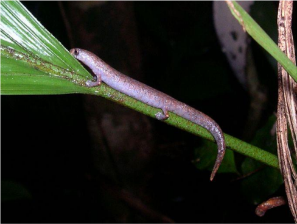

Anfíbios
Principais características
A classe Anfíbio (Lissanphibia) é dividido em três partes.
Ordem Caudata
Cauda longa, apêndices pares, sem ouvido médio
Ordem Gymnophiona
Corpo longo, sem pernas, segmentado por anéis, escavador, pulmão esquerdo rudimentar.
Ordem Anura ou Salientia
Sem cauda, adaptações para salto, e nado, vertebras fundidas (uróstilo), tímpano presente e laringe bem desenvolvida.
A Única espécies de Caudata brasileira pertence a Família Plethodontidae:

Por que a pele precisa ser permeável?
• Respiraçao cutânea
• Repiraçao pulmonar
Onde achar os anfíbios?
A maior marte das espécies de anfíbios do Brasil vivem em brejos, ou nas margens de lagoas e riachos/igarapés.
Os grupos possuem uma grande variação de adaptações para poder sobreviver em todos os biomas. No Brasil, podemos encontrar anfíbios de leste a oeste e de norte ao sul.
Algumas espécies dos Pampas possuem adaptações fisiológicas para suportar o frio do inverno. Enquanto no Pantanal e na Amazônia, as espécies precisaram aprender a sobreviver com as alterações dos níveis dos rios.
Alimentação dos anfíbios
No geral, são predadores de invertebrados tais como moscas, aranhas, baratas e minhocas.
Existem também espécies que se alimentam de pequenos roedores, serpentes e ate mesmo de outros anfíbios.